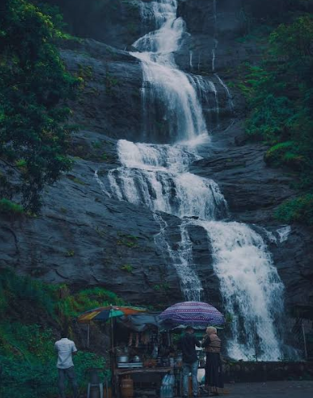
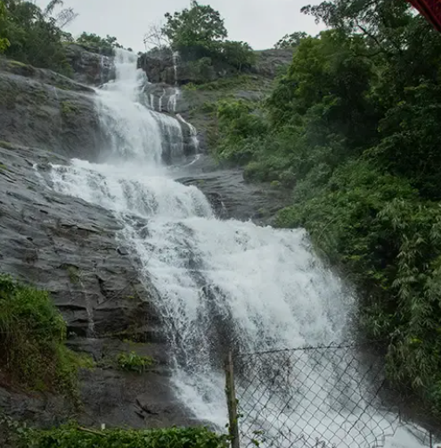
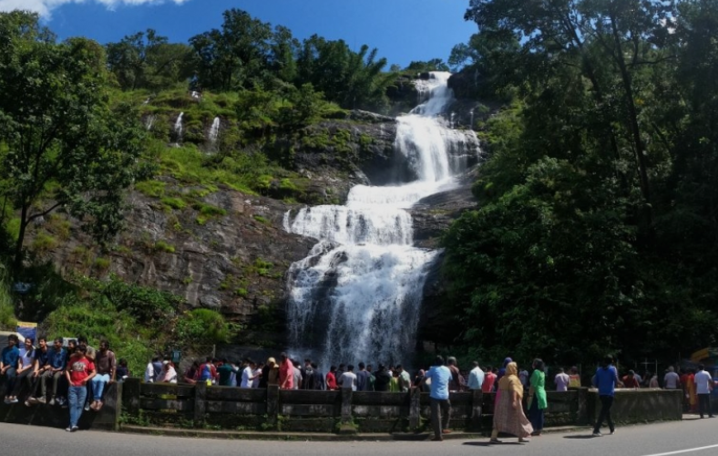
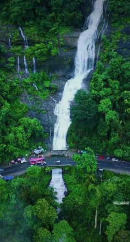
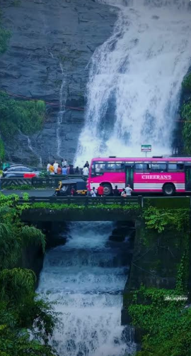

Cheeyappara Waterfalls is a beautiful seven-step waterfall located on the Kochi–Munnar Highway in Idukki district, Kerala. The waterfall cascades down rocky cliffs from a height of about 1000 feet, creating a spectacular view surrounded by dense forests and lush greenery. It is one of the most popular roadside attractions for tourists travelling to Munnar.
The area around the waterfall is ideal for photography, sightseeing, and enjoying the natural beauty of the Western Ghats. During the monsoon season, the waterfall becomes more powerful and attractive, drawing many visitors. Cheeyappara Waterfalls is also home to a variety of birds and plants, making it a perfect destination for nature lovers and travellers.





Cheeyappara Waterfalls is one of the most beautiful waterfalls in Idukki District, Kerala. Located on National Highway 85 between Neriamangalam and Adimali, it is a popular stop for tourists travelling to Munnar. The waterfall is famous for its seven-tier cascade, lush greenery and scenic beauty.
Cheeyappara Waterfalls has long been a natural attraction in the Western Ghats. With the development of tourism in Munnar, it became one of the most visited waterfalls in Idukki. Today, it is an important eco-tourism destination protected for its rich biodiversity. 1
The waterfall cascades down seven rocky steps and is surrounded by dense forests of the Western Ghats. Visitors can enjoy photography, sightseeing, nature walks and the refreshing atmosphere. It is one of the best roadside waterfalls in Kerala. 2
The area is covered with evergreen forests, medicinal plants, bamboo and many native species of the Western Ghats. The lush greenery makes the waterfall an attractive eco-tourism destination.
Today, Cheeyappara Waterfalls is one of Kerala's most popular roadside waterfalls. It attracts thousands of tourists every year because of its natural beauty, seven-step cascade and easy accessibility from Munnar. 3